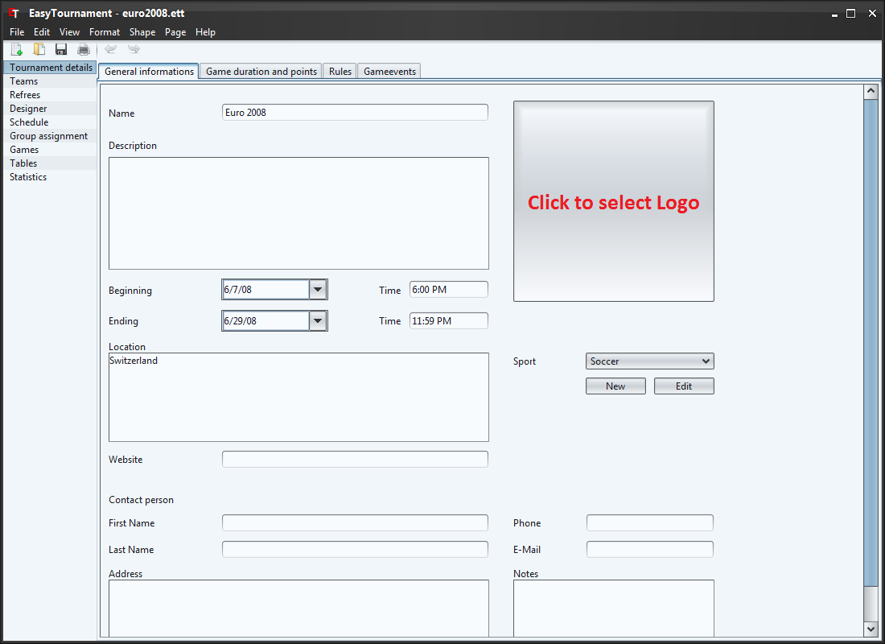

This screen allows you to add some general informations to the tournament. The name and the logo are used for the printing.
To add a logo to the tournament, you have to click on the quadratic button on the upper right side (see above image: red labeled) and select the desired image.
If you like to remove the image then click with the right mouse button on the image and select "Reset logo" in the context menu.
With the drop-down list Sport you are able to select the sport of your tournament. With this you are setting the standard rules of the tournament to them of the sport. How you can change the rules, game duration etc. you can read in the following chapters.
If the desired sport is not available you can create a new one by clicking on the "New" button below the drop-down list. Further informations to this you can read in the chapter Sport.